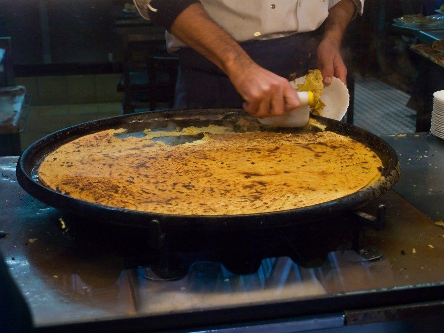
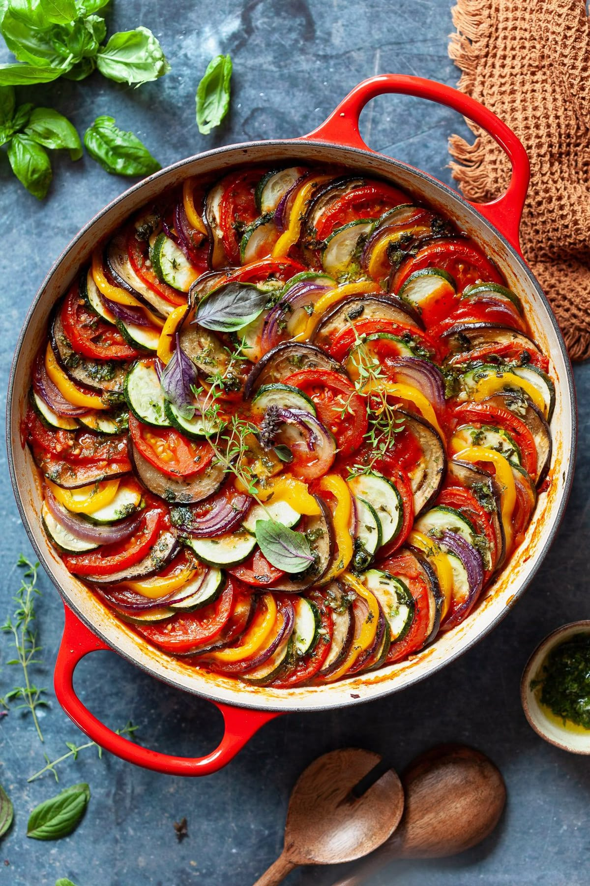
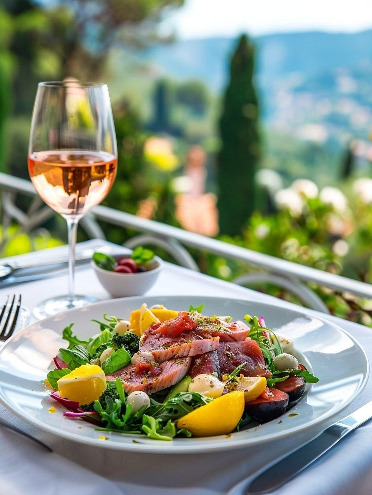
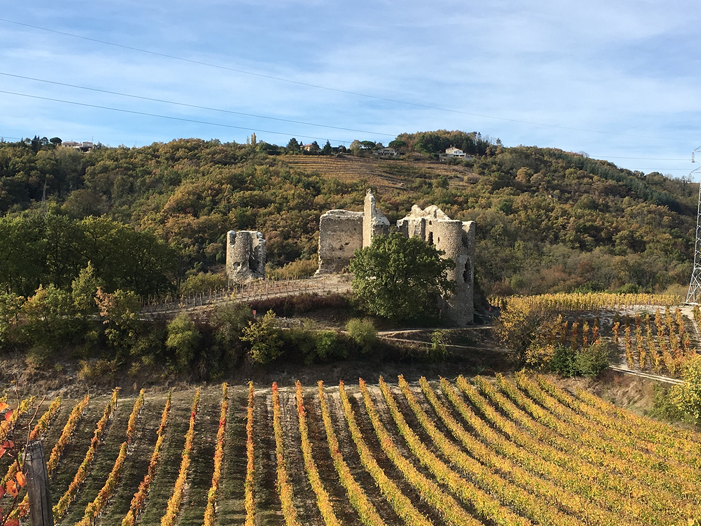
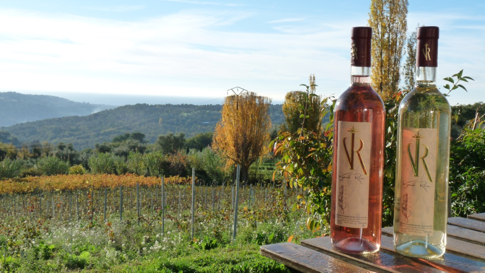

The Flavors of the South
The cuisine of the French Riviera is characterised by fresh Mediterranean ingredients such as golden olive oil, fresh seafood, and fragrant sun-ripened herbs.

Socca
A traditional chickpea pancake with a golden crust and moist interior. Historically known to sustain Nice during sieges, it is now a street food icon.
Visit Chez Pippo
Ratatouille
A hearty stew of late-summer vegetables like eggplant, zucchini, and bell peppers, all simmered in rich Provencal olive oil.
Visit Aux Bons Enfants
Salade Niçoise
This world-famous salad combines olives, tomatoes, hard-boiled eggs, and anchovies for a refreshing coastal meal.
Visit Le GaletVineyards of the South
The French Riviera has a long wine-making history dating back to 600BC, producing some of the world's most elegant Rosés.

Vignoble de Bellet
Perched on the hills of Nice, this unique vineyard produces AOC wines cooled by the refreshing winds of the Alps and the Sea.

Vins des Îles Lérins
Produced by monks on the St. Honorat island, these exceptional wines are grown in a silent, sacred sanctuary off the coast of Cannes.

Vignoble de St. Jeannet
Known for its "Vins de Soleil," where wine is aged in glass jars under the intense Provencal sun to create unique, deep flavors.
Experience The Riviera
Watch this guide that takes you through the best local eats in the Riviera.